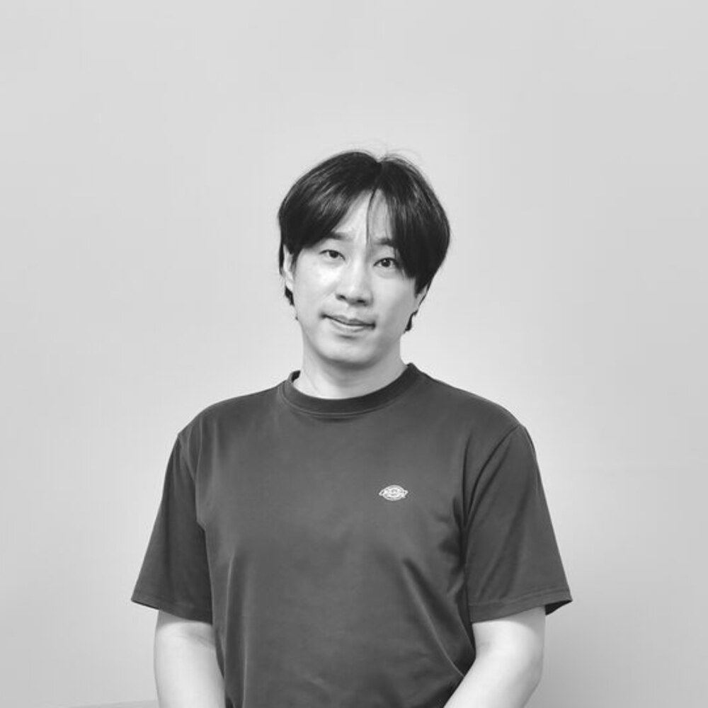

양승진
Yang Seungjin · Visual Artist & Curator
미술작가 · 전시기획자 · 아우름41 대표
나는 파도를 그려 입고 춤추게 된다.

Recent「파도, 꽃」 × 올디콜라
2026.11.04 – 11.08 · 대전
2026.11.04 – 11.08 · 대전

Yang Seungjin · Visual Artist & Curator
미술작가 · 전시기획자 · 아우름41 대표
나는 파도를 그려 입고 춤추게 된다.